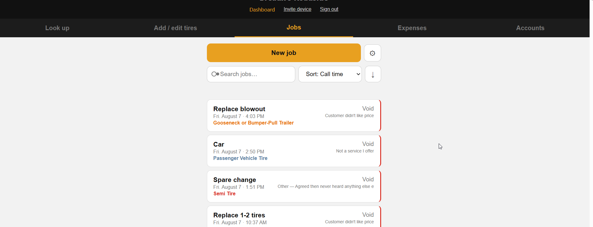

Six manual systems
→ one simple web-app
Call-source tracking, quoting, invoicing, tire inventory, expenses, and customer accounts were tracked in six disconnected places (or not at all). They were six views of the same event. I scoped and shipped an app that models it once.

The consolidation was the decision
Call attribution lived in a Google Form feeding a spreadsheet. Invoices were made in separate software. Tire counts were tracked by hand. Quotes were written by hand with no link to the job they became. Expenses and customer accounts weren't tracked at all.
A call arrives from a source and becomes a job. The job consumes tires, produces an invoice, generates expenses, and belongs to a customer. One event, recorded six times, in six places that never agreed.
The tool started as tire inventory and grew into everything above as the real workflow became clear.
How this was built
This was built with Claude Code, showcasing AI-assisted development capabilities and workflow. My work was present largely in problem definition, data modeling, architecture, user experience, and operational decisions - deciding webapp backend, database structure and where to host it, how to make changes safely with the system in production, necessary tests, anything the agent was unsure about, and interfacing with the end user. I don't see this as a lack of skill but rather a willingness to use the right tool for the job, and embrace a future of accelerated development.
The app
- Jobs — one record from first call through quote, completion, and paid invoice.
- Quotes and invoices — generated as documents from the job record, with per-line price overrides.
- Tire inventory — counts and average cost, decremented when a job completes.
- Expenses — categorized against a Schedule C list for tax time.
- Fleet accounts — repeat commercial customers with payment terms.
- Job photos — damage and before/after proof, stored in R2.
Cloudflare Workers serving both the API and the frontend, D1 for relational data, R2 for images. Three runtime dependencies, no build step, no frameworks. Passkey authentication with invite-gated registration: one daily user today, and adding the next one is issuing an invite code rather than a change to the app.

Some details
Some interesting decisions made along the way, and why they were made.
Mobile and Desktop
The app is designed to be used in the field, on a phone, and in a hurry. It needed to be simple - even when a customer isn't waiting on a quote, the end user does not want a complicated interface that makes their job harder. This meant a mobile-first design, with a simple interface that could also be used on a desktop PC for more intensive work like reporting and mass data entry.
Authentication
The end user of the app wants the simplest possible interface and needed a simple access and authentication model that allowed continuous updates without any turbulence. Continuously logging in or dealing with constant 2FA does not fit. Passkeys and signed-cookie browser sessions were the right answer. A validated authentication library was implemented which only creates new session secrets and distributes session cookies when prompted by a validated user, which then generates a 6 digit code the new user must reproduce within 15 minutes to be granted access. This system creates a simple and secure authentication model that is easy to maintain for the end user.
Photos are the one thing not in D1
Image bytes go to object storage (R2); only metadata goes in D1. Rows there cap around a megabyte, and that database is the billing spine — blobs would bloat every backup of the records the business actually depends on. A lookup table in D1 links images to jobs.
Ads importing
Google Ads and Local Service Ads both have exports that contain conversions: Clicks that became calls in Google Ads, and "Leads" (calls) in Local Service Ads. The export for each is csv format, Local Service Ads containing phone number and time, Google Ads containing category and time. The app accepts both into respective D1 tables, and a query joins them to jobs by phone number and timestamp from LSA first, then by category and timestamp from Google Ads. The result is each job in the list receiving an attribution record of the call source, without manual entry. The app can then report the number of calls and jobs by source, and the owner can make informed decisions about ad spend.
Dashboards
A lot of good and useful information is stored in the database, but the owner doesn't want to make SQL queries to get it. An in-app dashboard was built to show important metrics the owner needs to make decisions, like number of calls, jobs, revenue, expenses, inventory, etc. The dashboard is built as simple charts formed with SQL queries and is easily modified and deployed with the app.


Developing while it's in use
The app went into daily use early and stayed there. Every schema change after the first week had to apply to a database with real rows in it, while the owner was mid-week and taking calls. There's no staging environment, so a bug isn't a failing test — it's an invoice with the wrong number, sent to a customer.
Practically that meant: every migration written to be additive rather than destructive, a full database export before every production change, and an automated test suite that has to pass before anything merges. Merging deploys automatically, so that test run is the last gate before the business is using the change.
The backup rule is enforced by a hook rather than by memory. Any command that would write to the production database is blocked unless a fresh export already exists on disk — and the refusal names the export command to run. Read-only queries and anything pointed at the local database pass untouched.
It's committed to the repository, not kept in my own machine's config. A safeguard that only exists where it was first written protects one person, which isn't what it's for.
Rows are never hard-deleted. A mis-entered purchase is reversed and marked rather than erased, so it stays available for audit but drops out of reporting totals. That's a bookkeeping requirement, not a technical one.